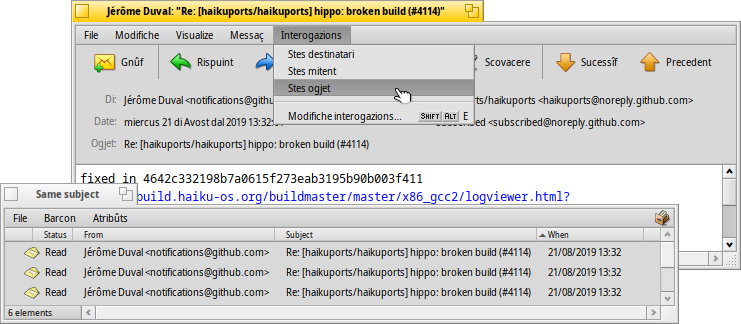

| Tabele |
| Leture dai messaçs Creâ gnûfs messaçs Preferencis |
| Deskbar: | ||
| Posizion: | /boot/system/apps/Mail | |
| Impostazions: | ~/config/settings/Mail/ ~/config/settings/Mail/Menu Links/ - I ogjets metûts achì a vegnin fûr tal menù contestuâl de casele de pueste ~/config/settings/Mail/signatures/ - Posizion par archiviâ lis firmis ~/config/settings/Mail/status/ - Posizion par archiviâ i stâts personalizâts |
Mail al è il visualizadôr e editôr predefinît di Haiku pes e-mail. Nol à nuie a ce fâ cul efetîf recupar e spedizion de pueste, che a vegnin fats dal mail_daemon e a puedin jessi configurâts gracie aes preferencis di E-mail.
Cheste pagjine e je une panoramiche gjenerâl de aplicazion Mail. Par vê plui informazions su ce mût che e funzione la pueste in Haiku, fâs riferiment a Laboratori su la gjestion de pueste.
 Leture dai messaçs
Leture dai messaçs
Dopli clic suntune e-mail le vierç in Mail. La interface e je vonde semplice:

Un menù e une opzionâl sbare dai struments parsore, cuntune aree dai atribûts interessants di une mail (a, di, ogjet, date) sot di chê e dopo il cuarp efetîf de mail. Se la mail e ven fûr cun caratars stranis o vueide, prove a cambiâ la tal menù .
Se si à file zontâts a une e-mail, chei a vegnin listâts ae fin dal messaç. Un clic diestrie suntun al vierç un menù contestuâl par fâ o . Tu puedis ancje strissinâle e molâle sul Scritori o suntun altri barcon di Tracker.
La plui part dai elements de sbare dai strument o dal menù si spieghin di bessôi, duncje si concentrarìn dome su lis robis impuartantis.
File
Cuant che tu sieris il barcon di une mail, il so stât al ven di norme cambiât di "New" a "Read". Ma tu puedis stabilî ancje altris stâts, sielzintju dal sot-menù . Lì tu puedis ancje cjatâ la opzion par creâ i tiei stâts personalizâts, che a vegnin salvâts sot di ~/config/settings/Mail/status/.
Modifiche
Achì tu cjatarâs un element par vierzi lis di Mail (viôt sot) e une scurte par gjestî i tiei , che e vierzarà il panel des preferencis E-mail.
Visualize
Dome di râr ti coventaran chescj doi elements, se no mai:
| ALT H | Al mostre la intestazion complete di une mail, intal câs che ti coventi discuvierzi il percors de tô mail, par esempli. | ||
| Al mostre une mail tal sô stât grês, vâl a dî cun ducj i siei caratars di control e cence la colorazion di Mail des citazions/URL, par esempli... |
Messaç
Lis diferentis opzions par rispuindi a une mail a podaressin vê bisugne di un tic di spiegazion.
| ALT R | La rispueste standard al servidôr che ti à inviât la mail. NOTE: tal câs di publicazions su mailing list, chest di norme al rispuint ae mailing list, no dome ae persone che e à scrit il messaç! | ||
| OPZ ALT R | Chest di chê altre bande, al invie dret ae persone listade intal atribût “Di” e dome a chê. | ||
| MAIUSC ALT R | Al rispuint al mitent origjinâl e a ducj i destinataris (CC) de mail origjinâl. |
Lis vôs , e ancje chês si spieghin di bessolis.
Cuant che tu vierzis une e-mail di un barcon di Tracker o dai risultâts di interogazion, e ti puartaran ae e-mail precedente/sucessive de liste.
al tire sù, suntun sot-menù, dutis lis direzions e-mail de intestazion e dal efetîf cuarp de email. Sielzint une direzion si vierzarà la aplicazion People in mût di podê completâ e salvâ lis informazions dal contat.
Interogazions
Chest menù al ten dentri lis interogazions che a mostrin dutis lis e-mail coreladis ae mail cumò vierte. Selezionant , o si vierç une interogazion che e liste dutis lis mail corispondentis:

Creâ gnûfs messaçs
E ven creade une gnove e-mail invocant dal menù o cu la icone corispondente de sbare dai struments di une e-mail vierte. Opûr al baste fâ partî la aplicazion Mail o sielzi dal menù contestuâl de icone de buchete intal Deskbar.
Il barcon al è simil a chel des mail di lei. Il menù e la sbare dai struments a son un pôc diviers e, logjic, si scugne jemplâ i ricuadris di test cu lis direzions e-mail dai destinataris, l'ogjet e vie indenant.
e je la scurtadure pal tiermin anacronistic "copie cjarbon" e al corispuint a vê copiis de tô mail inviadis aes personis listadis. La diference rispieta a listâ un grum di direzions tal cjamp "A" e je che no tu ti indrecis aes personis metudis in Cc, duncje segnalant che no tu ti spietis une lôr rispueste.
al significhe "Copie cjarbon platade" che al fâs la stesse robe di "Cc", ma al plate a ducj i altris destinataris di Ccp.
Tu puedis inserî plui destinataris separant lis lôr direzions cuntune virgule. , e a son menù a tende. A contegnin dutis lis direzions e-mail cajtadis sul to sisteme gracie a une interogazion ai file di People. Il lôr atribût "Group" ju ordenarà tai sot-menù corispondents.
Di gnûf, si concentrarìn su lis funzionalitâts tal menù plui interessantis.
File
Cun tu puedis archiviâ il to lavôr fat e tornâ parsore plui indenant. Par tornâ a cjariâlu, sielzilu dal sotmenù , che ti listarà il risultât di une interogazion par dutis lis mail che a àn il stât "Draft" (di stampon).
Modifiche
e o lis lôr relativis scurtis ALT + / - a vegnin doprâts par zontâ/gjavâ un nivel di citazion, lant a justâ il numar di simbui ">" denant des riis citadis. Al baste selezionâ cualchi toc di test tra dutis lis riis che tu desideris de/citâ e clamâ l'element dal menù.
Il pal moment al eseguìs dome corezions pai tescj in inglês segnant in ros lis peralis sbaliadis o no cognossudis e fasintlis viodi in corsîf. Fasint clic diestri su chês peraluis si vierç un menù che al da sugjeriments su cemût corezi la peraule o par fai fâ une di chê peraule tal vocabolari acetât.
Dopo, a son di gnûf lis vôs par vierzi lis di Mail (viôt chi sot) e une scurte par gjestî i tiei , che e vierzarà il panel des preferencis di E-mail.
Messaç
Cun tu puedis zontâ tescj predefinîts ae fin de tô e-mail. Dal so sot-menù tu puedis sielzi une specifiche firme opûr une .
Tu creis gnovis firmis o tu modifichis chês esistentis cun , che al vierzarà un barcon dulà che tu podarâs inserî il test e il titul de tô gnove firme. Lì, tal menù , tu cjatis lis vôs par vierzi une specifiche firme, opûr par eliminâ la firme cjariade in chest moment. Lis firmis a vegnin salvadis su ~/config/settings/Mail/signatures.
Use and to add/remove files as enclosures. You can also drag & drop files from a Tracker window. With text files you have to be careful not to drop them in the email body, or they'll get pasted as text instead.
File attachments are listed below the email body. You can remove a file by invoking a context menu or by selecting it and pressing DEL.
Interogazions
As when reading mails, this menu holds queries that show all mails related to the one you are currently composing. Selecting , or opens a query that lists all matching mails.
Preferencis
Lis preferencis di Mail a son sudividudis in dôs parts:
Interface utent
| Opzions par mostrâ lis etichetis sot dai botons o par platâ dal dut la sbare dai struments. | ||
| Al stabilìs il gjenar di caratar doprât pal test de e-mail. | ||
| Al stabilìs la dimension dal caratar. | ||
| Al colore i diferents nivei di citazion. | ||
| Al ative/disative il control ortografic al inviament dal program. | ||
| Se tu sieris une e-mail cul stât "Gnûf", tu puedis segnâle in automatic tant che "Let". |
Spedizion pueste
| Se tu âs plui accounts di pueste, cheste opzion e specifiche cuâl doprâ in maniere predefinide cuant che al ven creât un gnûf messaç. | ||
| Cuant che tu rispuindis a une e-mail, tu puedis decidi dôs robis: o fâ simpri metût tal menù a tende parsore, o doprâ , che al inviarà la e-mail dal stes account che al à ricevût il messaç origjinari. | ||
Chest al ven inserît prime dal test citât te tô rispueste. Tu puedis doprâ variis variabilis dal menù a tende dongje dal cjamp di test. Esempli: "Mandi %n!\n\nAl/Ai %d tu âs scrit:\n" produces this:
Mandi Dr. Hawking! Al/Ai Mon, 18 Jan 1998 02:55:16 +0800 tu âs scrit: > graciis ancjemò pe ispirazion in merit ae costante cosmologjiche. > ...e al continue cul rest dal test citât... | ||
| Al zonte une firme automatiche ae fin de e-mail. | ||
| Al stabilìs la codifiche predefinide. | ||
| Se il to messaç di pueste al conten caratars che nol è pussibil codificâ cul metodi di codifiche corinte, tu puedis ativâ un avîs in merit. Chest ti da la oportunitât di cambiâ la codifiche prime di inviâ il messaç. In câs contrari i caratars che no si puedin codificâ a vegnin sostituîts cuntun simbul a forme di retangul. | ||
| Al inserìs une interuzion pe rie gnove ogni 76 caratars, che al facilite la leture de pueste. | ||
| Tu puedis sielzi se inviâ i atribûts BFS di un file adun cu lis zontis. Chest al è util pai altris utents di Haiku, viodût che ur rive un file "complet" (pense ai atribûts artist, album, titul dai files MP3), ma al podarès creâ confusion (o adiriture suspiet) cun chei altris utents, che si domandaran ce che al podarès jessi chê zonte "BeOS Attributes" in plui... Se tu sielzis di no inviâ i atribûts cu lis tôs zontis, visiti di creâ un file zip dai tiei files prime di inviâju o tu eliminarâs i atribûts BFS. |